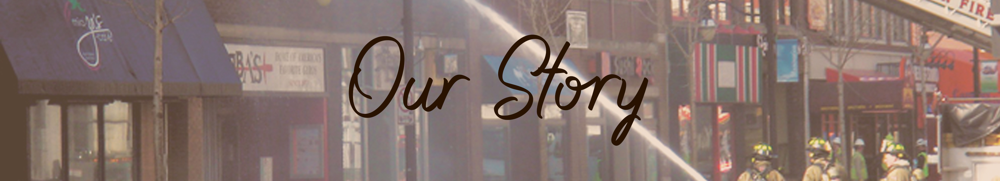
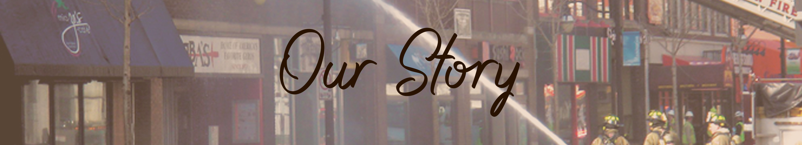
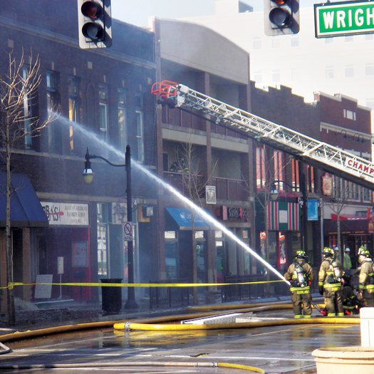

Donut Delights was started in 1971 by Melvin Furballski, an immigrant baker from the far east coast of Poland. Known far and wide for his delicate pastries, Melvin fled his homeland in search of a better life for his family. In 1970 he landed in New York City and by chance he found an open seat on a bus heading west. When an unexpected mechanical failure forced a three day delay in Champaign, Illinois, Furballski saw the need for a donut shop, so he decided to stay and make a new life for himself in Urbana, Illinois. With only one hundred dollars to his name, he found an abandoned breadshop and within two days he had one of a kind donuts flying off the racks faster than he could bake them and things have never slowed down. Now you can find that same great donut recipe plus dozens more still being made with the same love and care as when Donut Delights first opened. A bakery fire in the mid-1980s destroyed many of the shop's records...but NOT THE RECIPES! While many people might have viewed the fire as an excuse to quit, Melvin instead used it as an opportunity to reconfigure the interior design, allowing him to add the coffee roastery section as well. So when you visit, be prepared for the inviting mix of aromas from fresh-roasted coffee beans and fresh-baked donuts: It's the closest thing to "Breakfast Heaven" anywhere in the C-U area!
